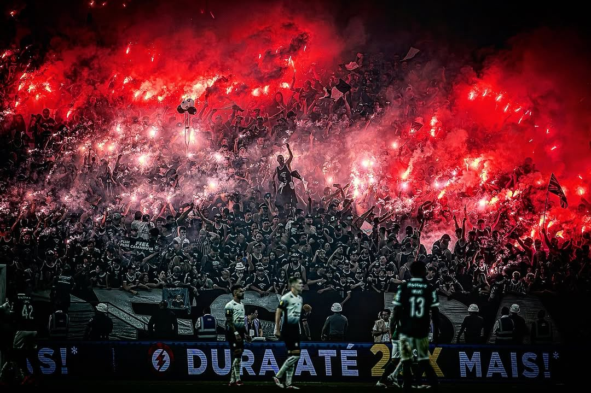

Sobre o Corinthians
O Sport Club Corinthians Paulista é um clube de futebol brasileiro, fundado em 1910, na cidade de São Paulo. O clube possui uma enorme tradição no futebol brasileiro, sendo conhecido por sua torcida apaixonada e pelas cores preta e branca.

História do Corinthians
O Corinthians foi fundado em 1910 por um grupo de trabalhadores no bairro do Bom Retiro, em São Paulo. Ao longo de sua história, o clube conquistou diversos títulos importantes e se tornou uma das maiores equipes do futebol brasileiro.

Importância artística e cultural do Corinthians
O Corinthians possui grande importância para a cultura esportiva brasileira. O clube faz parte da identidade de milhões de torcedores. Suas cores, símbolos, músicas da torcida e tradições fazem parte da cultura do futebol. O clube também contribui para a formação de atletas e para a valorização do esporte.

Curiosidades
Curiosidade 1
O Corinthians foi fundado em 1910 e é um dos clubes mais populares do Brasil.
Curiosidade 2
A Neo Química Arena é o estádio do Corinthians, localizado na cidade de São Paulo.